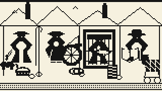

Of the division of labour
The greatest improvement in the productive powers of labour, and the greater part of the skill, dexterity, and judgment with which it seems to be attended, are the effects of the division of labour.
THE greatest improvement in the productive powers of labour, and the greater part of the skill, dexterity, and judgment with which it is any where directed, or applied, seem to have been the effects of the division of labour.
The effects of the division of labour in the general business of society will be more easily understood by considering in what manner it operates in some particular manufactures.
Agent OS · 关系 Gate
正在把两条原文接通…
证据、关系、固定高度舞台依次准备。
- 读取 PDF 36 / PDF 45 锚点
- 检查市场范围关系
- 锁定世界舞台高度
粗呢外套小镇
触发原文：Smith_0206-01_235

- 动作发生后，角色局部状态会按因果顺序写入这里。
That the division of labour is limited by the extent of the market
Division of labour is limited by the extent of the power of exchanging.
AS it is the power of exchanging that gives occasion to the division of labour, so the extent of this division must always be limited by the extent of that power, or, in other words, by the extent of the market.
When the market is very small, no person can have any encouragement to dedicate himself entirely to one employment.